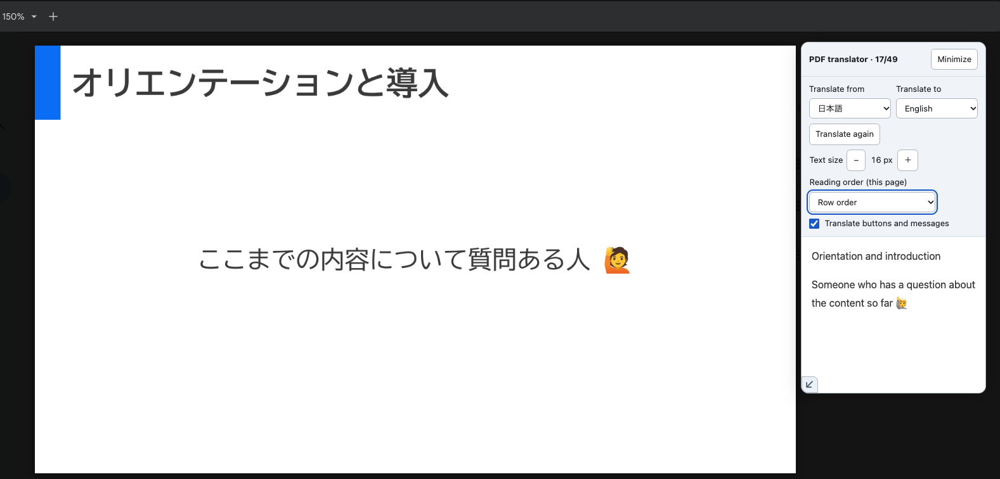

Canva資料用 v2.8.0
Canvaの閲覧用リンクで開くスライドに使います。Canvaの編集画面には対応していません。
登録する名前：Canva 閲覧用テキストパネル（試用版）
Canva版 v2.8.0
Canva版のコードを表示・手動でコピーする
コード欄をクリックし、⌘＋A → ⌘＋C（Mac）、またはCtrl＋A → Ctrl＋C（Windows）でコピーできます。
授業資料を、自分の読みやすい言語で
韓が担当する授業向けに試運用している翻訳ツールの導入ガイドです。Canvaの閲覧用資料と、Google Classroomで配布されたPDFに対応しています。
日本語の資料を開いたまま、右側のパネルに訳文を表示します。ページを変えると訳文も更新されます。PDFを保存したり、別のサービスへアップロードしたりする操作は不要です。
登録済みのツールを更新する方は、手順04の「登録済みのコードを更新する場合」へ進んでください。
Tampermonkeyの準備（手順01〜03）は共通です。両方の資料を使う方は、手順04でCanva版とPDF版を別々のスクリプトとして登録します。
このツールはパソコン版Google Chromeで使います。スマートフォンやタブレットのChromeには対応していません。
すでに最新版のChromeで授業資料を開いている場合は、そのまま次へ進みます。Chromeの翻訳機能について（公式）
Tampermonkeyは、これから登録する翻訳ツールのコードをChromeで動かすための拡張機能です。追加済みの方は手順03へ進みます。
「Chromeから削除」と表示されている場合は、すでに追加されています。Chrome右上のパズル形の「拡張機能」からTampermonkeyを探せます。ピンのボタンを押すと、アイコンを常に表示できます。
Tampermonkeyを追加しただけでは、翻訳ツールを動かせない場合があります。Chromeの設定で、スクリプトの実行を許可します。
同じChromeプロフィールでCanva版などがすでに動いていれば、通常、この設定は済んでいます。項目が見つからない場合はChromeを更新し、Tampermonkey公式の設定手順も確認してください。
開いた先がCanvaの閲覧画面ならCanva版、PDFの閲覧画面ならPDF版を選びます。Classroomに貼られたCanvaのリンクを開く場合も、使うのはCanva版です。
必要な方だけ登録できます。両方使う場合は、1つずつ、別々のスクリプトとして登録してください。2つのコードを1つの編集欄に続けて貼り付ける必要はありません。
Canvaの閲覧用リンクで開くスライドに使います。Canvaの編集画面には対応していません。
登録する名前：Canva 閲覧用テキストパネル（試用版）
Canva版 v2.8.0
コード欄をクリックし、⌘＋A → ⌘＋C（Mac）、またはCtrl＋A → Ctrl＋C（Windows）でコピーできます。
Classroom内のPDFプレビューや、Google DriveのPDF閲覧画面で使います。PDFのダウンロードは不要です。
登録する名前：Classroom PDF 翻訳パネル（試用版）
PDF版 v0.3.0
コード欄をクリックし、⌘＋A → ⌘＋C（Mac）、またはCtrl＋A → Ctrl＋C（Windows）でコピーできます。
もう一方も使う場合は、そのコードをコピーし、もう一度「新規スクリプトを追加」から登録します。すでに動いている版は、追加のために更新する必要はありません。
保存したら：すでに資料を開いているタブは、一度再読み込みしてから使ってください。新しいコードが反映されます。
Canvaの資料がClassroomでリンクとして配布されている場合も、開いた先がCanvaならこちらの手順です。
画像だけで構成されたPDFには対応していません。
PDFを英語に翻訳している例です。元の資料を開いたまま、右側のパネルに本文の訳文が表示されていれば、翻訳できています。

日本語を選んだ場合は、「原文を表示」を押すと日本語のまま表示できます。ボタンの翻訳がオンの場合、ボタン名は選んだ言語に合わせて変わります。
初回はChromeが翻訳用の言語データを取得するため、少し時間がかかる場合があります。再読み込み後や言語変更後は、開始ボタンをもう一度押してください。翻訳にはChromeの内蔵機能を使用します。
日本語・英語・中国語（簡体字／繁体字）・韓国語・ベトナム語・タイ語・インドネシア語・スペイン語・フランス語・ドイツ語・イタリア語・ポルトガル語・ロシア語・ウクライナ語・アラビア語・ヒンディー語・ベンガル語・トルコ語。
下のボタン名は英語表示の例です。ボタンの翻訳をオンにすると、選択した言語で表示されます。
| やりたいこと | 操作 |
|---|---|
| パネルを移動する | 上部のタイトル付近をドラッグします。Canva版・PDF版ともに、起動時は右側に表示されます。 |
| 大きさを変える | Canva版・PDF版ともに、左下の「↙」をドラッグします。 |
| 文字を大きく・小さくする | 「Text size（文字サイズ）」の「＋」で大きく、「−」で小さくします。本文と番号の大きさを12〜32 pxの範囲で調整できます。初期値は17 pxです。通常、選んだ大きさは同じブラウザー・同じサイトで次回も引き継がれます。 |
| もう一度翻訳する | 「Translate again」を押します。日本語の原文表示では「表示を更新」です。 |
| 本文の言語を変える | 言語を選び直し、開始ボタンを押します。 |
| 小さく畳む・戻す | 「Minimize」で畳み、「Expand」で戻します。 |
| ボタンの言語を変える | 「Translate buttons and messages」のチェックを切り替えます。オン：選択した言語／オフ：日本語。 |
| 読む順番を変える | Canva版では「Reading order (this slide)」、PDF版では「Reading order (this page)」で選びます。「Column order (left → right)」は左列→右列、「Row order」は上の行から順に読みます。初期設定はCanva版が行順、PDF版が列順です。設定はページごとに保存されます。 |
このツールは日本語の授業資料を読むための試用版です。資料の構成や利用環境によっては、文字・読み順・色を正しく反映できない場合があります。